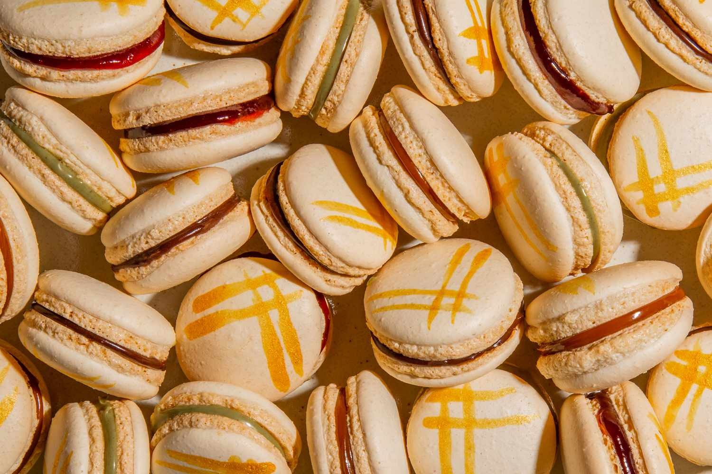

Made for a lasting moment
We at Macaroon Land, believe indulgence should be an
experience—elegant, memorable, and full of joy.
For nearly five
years, we’ve been crafting luxurious, high-quality macarons that
delight both the eye and the palate. Our mission is simple: to offer
exceptional value without compromising on quality. What truly sets
us apart is our unwavering commitment to customer satisfaction.
From
the moment you visit us to the last bite of your macaron, we strive
to make every step of the journey smooth, delightful, and
unforgettable. We listen, we care, and we constantly refine what we
do—because your experience matters to us.
With a loyal clientele and
a growing reputation for excellence, Macaroon Land continues to
blend tradition, creativity, and care into every box. Whether you’re
celebrating a special moment or simply treating yourself, we’re here
to make it extraordinary.
Welcome to Macaroon Land—where luxury
meets flavor, and every detail is crafted for your perfect
experience.

A Family Recipe
Born
from a Whispered Promise
France, 1892
Long before Macaroon Land opened its elegant doors, before the glass cases filled with pastel perfection and the aroma of almond sweetness drifted down the street—there was just a promise.
It began in the lavender fields of southern France, where a young girl named Élise would spend her summers with her grandmother, Mireille.
Mireille was quiet but radiant, and her kitchen was a sacred place -
where a family recipe passed down for generations — a macaron so delicate, so perfectly balanced, it was said to bring silence to the noisiest dinner table.
But Mireille’s true secret wasn’t just the ingredients. It was intention. “A macaron,” she would whisper, “must taste like a memory.”
Years later, Élise brought that recipe—and that philosophy—with her as she opened Macaroon Land.
Each flavor was inspired by stories:
Amour de Lavande, from those summer days in Provence. Midnight Ganache, an ode to evenings spent under starlit skies. And Citron Éclat, a zesty twist born from Mireille’s laughter when Élise once confused sugar with salt.
Today, Macaroon Land stands not just as a patisserie—but as a living memory. A promise fulfilled. A family tradition reimagined for the modern world, where luxury meets love, and every bite tells a story.

Uniqely yours.
From Paris to LA.
Since 1902.
Findings to keep
Our macarons are always available at their freshest in our exclusive locations around the major cities around the globe - from London to Paris and from LA to TLV, we strive to provide the most amazing experience your taste buds can have:
- Macroon Land Paris, France (Flagship Store)
- Macroon Land LA, CA.
- Macroon Land NY, NY.
- Macroon Land Tel Aviv, IL
- Macroon Land Tokyo, Japan
- Macroon Land La Romana, Rome, Italy
You can also find our pre-packaged macarons with market leading retail stores like:
- Walmart
- K-mart
- Costco
- H.E.B (select stores in Dallas,TX
- Merkaza - a special brand member in IL